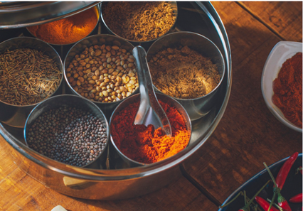
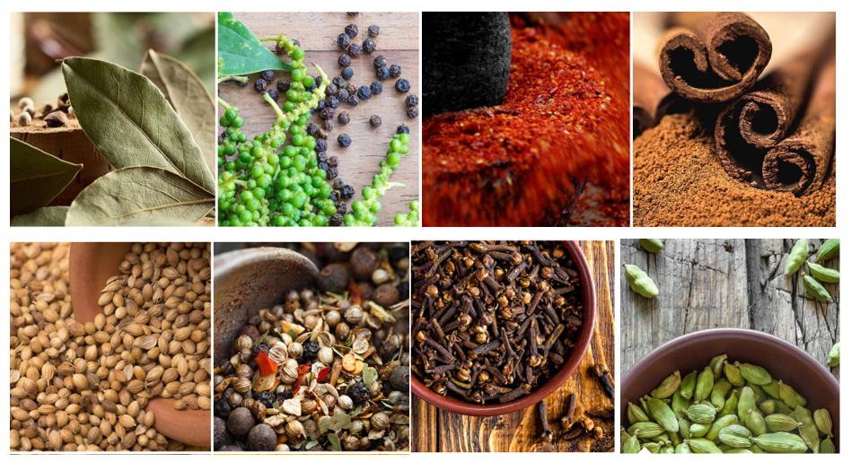
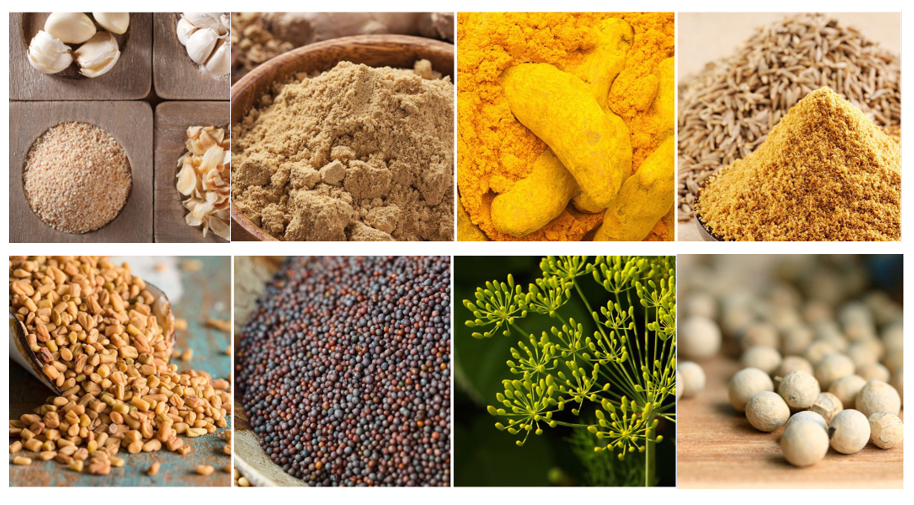

<!DOCTYPE fav_Masala>
<fav_Masala>
<head>
    <meta charset="UTF-8">
<title>  <b>Maharashtra Spices</b> </title>

</head>
<body>
<h1>Maharashtra Spices</h1>
<p>where you get <b>Authentic original taste</b> </p>
<main>
    <p>Maharashtra Spices was founded back in 1990 when an ordinary housewife (Nita) realized her delicious food secret is actually her home-made masalas. From childhood she wanted to do something unique which skills she has. And then later she established her own home-made Maharashtra spices products. She opened up a small shop called Maharashtra Spices and began selling high quality spices from India to almost each part of world.
        Maharashtra Spices soon grew in stature and acceptability. From a household name amongst Maharashtrian families to a firm favourite of Asian home cooks in the UK, today Maharashtra Spices has become a brand much loved by many. And our ambition to bring you the authentic taste of home stands stronger than ever before. 
    </p>
    <h3>SPICE SOURCING </h3>
    <p>At the heart of our business is a quest to unearth the most authentic high-quality spices. We travel deep into the heartland, where spices are found in their purest form. They are then sown and grown. The journey of spices from seed to shelf takes place under the watchful eye of experts and local farmers.
        Each Maharashtra spice is carefully grown in the most ideal conditions. They are handpicked and harvested at just the right moment by practiced hands.
        Dried, cleaned, crushed, grounded, and sorted, each spice goes through a unique process most suited to them. Then the spices are tested by accredited food testing laboratories in India and around the world to ensure they are safe for consumption and ready to eat even when they aren’t cooked. Once the spices meet the strict quality standards, they are packQd and placed on the shelf.
        So you can be rest assured that only the finest and purest of spices reach your masaledani (spice box) to recreate the taste of home.
        </p>
        
         </main>
         <h2>Products</h2>
         <li>Whole Spices</li>
         <li>Curry Power</li>
         <li>Masala Blends</li>
         <li>Seasonings</li>
         
         <h3>WHAT MAKES US DIFFERENT</h3>
        <p>Nothing can recreate the taste and comfort of a hearty home cooked meal. Well almost nothing. The authentic Maharashtra Spices flavours bring food alive with the taste of home. From an aspiring home cook to a busy entrepreneur, we help everyone create delicious meals with just a few spoonfuls of the Maharashtra Spices magic.
            With over 150 products available, we ensure that each product is of the highest quality, so you receive only the best. Our range of the finest spices, curry mixes and masalas are perfect to flavour cuisines from around the world.
            What’s more, we partner with our suppliers to adopt and support the best corporate social responsibility practices to ensure improved working conditions throughout our supply chain.
            Firstly, our suppliers and ourselves are part of the Supplier Ethnical Data Exchange (SEDEX), a non-profit organisation dedicated to sharing information on labour standards, health and safety, environment, and business ethnics. Secondly, we insist that all our suppliers sign up to our Supplier Code of Conduct and Anti-Bribery and Corruption policies, which cover acceptable labour standards (e.g., not using child labour, complying with national standards for wQ and working hours, providing safe and hygienic working conditions) and strict prohibition of participating in bribery
            </p>
            <h4>SPICE DIARY</h4>
            
            <p></p>
            
            <p>
                <h4>Audio</h4>
            <audio controls>
            
            <source src="mp3.mp3" type="audio/mpeg">
            </audio>

            <h2 style="color:rgb(111, 0, 255);">"From my kitchen to your kitchen....."</h2>

            <video width="820" height="540" autoplay>
                <source src="mp5.mp4"  type="video/mp4">
            </video>
            </p>
            <p>
            <iframe width="1220"  height="692" src="https://www.youtube.com/watch?v=sJUbo5Q8oJ8"  title="Youtube video player" frameborder="0" allow="accelerometer; autoplay; clipboard-write; encrypted-media;gyroscope; picture-in-picture" allowfullscreen>
            </iframe>
            </p>

        </blockquote>
        <p> <b> <h1  style="background-color:Tomato;">!! My motivation is you and your family and I feel its our responcibility to look after our loveones!!</b> </p>
        </h1>
        <Form onsubmit="submitForm()">
            <label  for= "name">Name</label>
            <input type="text" id="name" name="name"  placeholder="Your Name">
            <label for="email">Email</label>
            <input Type="text" id="email" name="email" placeholder="Enter Email"
        <label for="Subject">Subject</label>
            <textarea id="text" name="Subject" placeholder="How I can help?"
            style="height:200px">
        </textarea>
       
        <input type="submit"   value="submit">
    </Form>


        <form action="/action_pQ.php">

           <h1> <p>What you would like to order:</p> </h1>
            <input type="radio" id="Turmeric" name="fav_Masala" value="Turmeric">
            <label for="Turmeric">Turmeric</label><br>
            <input type="radio" id="Chilli Powder" name="fav_Masala" value="Chilli Powder">
            <label for="Chilli Powder">Chilli Powder</label><br>
            <input type="radio" id="Curry Powder" name="fav_Masala" value="Curry Powder">
            <label for="Curry Powder">Curry Powder</label>
          
            <br>  
          
           <h1> <p>Please select quantity/kg:</p>  </h1>
            <input type="radio" id="Q1" name="Q" value="30">
            <label for="Q1">0 - 30</label><br>
            <input type="radio" id="Q2" name="Q" value="60">
            <label for="Q2">31 - 60</label><br>  
            <input type="radio" id="Q3" name="Q" value="100">
            <label for="Q3">61 - 100</label><br><br>
            <input type="submit" value="Submit">
          </form>
        </Form>
</body>

                                     